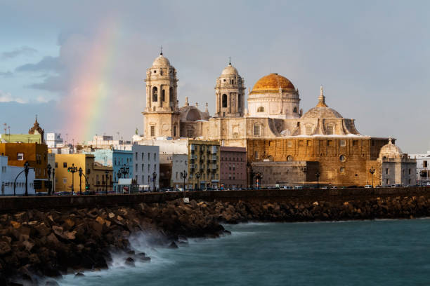

Conocida cariñosamente como la 'Tacita de Plata', Cádiz presume de ser una de las ciudades más fascinantes de Andalucía.
Su casco histórico, rodeado casi por completo por el océano Atlántico, invita a caminar sin rumbo fijo entre plazas llenas de vida,
torres miradores y monumentos de piedra dorada. Es un destino que combina a la perfección la riqueza de un legado milenario con la alegría de su gente y una gastronomía marinera inigualable,
convirtiendo cada rincón en una experiencia inolvidable para cualquier viajero.